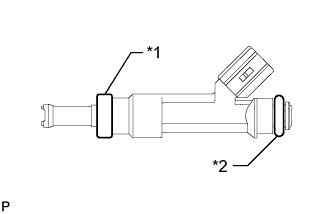
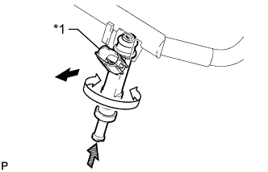
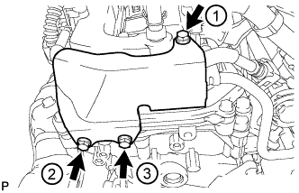

ТОПЛИВНАЯ ФОРСУНКА > УСТАНОВКА |
| 1. УСТАНОВИТЕ ТОПЛИВНУЮ ФОРСУНКУ В СБОРЕ |
|  |
Установите новый изолятор на каждую форсунку.
| *1 | Новая изоляция |
| *2 | Новое кольцевое уплотнение |
Нанесите небольшой слой шпиндельного масла или бензина на новые кольцевые уплотнения и установите их по одному на каждую топливную форсунку.
Установите все 6 форсунок.
|  |
Поворачивая каждую топливную форсунку влево и вправо, установите ее на топливную рампу.
| *1 | Часть |
 | Наружу |
 | Поверните |
 | Нажмите |
Расположите топливные форсунки так, чтобы разъемы были направлены наружу.
| 2. УСТАНОВИТЕ ТОПЛИВНУЮ РАМПУ В СБОРЕ |
Разместите топливную рампу с 6 топливными форсунками на впускном коллекторе.
Временно вверните 6 болтов, используемых для крепления топливной рампы, в впускной коллектор.
 |
Убедитесь, что форсунки вращаются плавно.
| *1 | Поверните |
Расположите топливные форсунки так, чтобы разъемы были направлены наружу.
Затяните 6 болтов.
Подсоедините 6 разъемов топливных форсунок.
| 3. ПОДСОЕДИНИТЕ ТОПЛИВОПРОВОД № 2 В СБОРЕ |
Подсоедините топливопровод № 2 (Нажмите здесь).
| 4. ПОДСОЕДИНИТЕ ТОПЛИВОПРОВОД № 1 В СБОРЕ |
Подсоедините топливопровод № 1 (Нажмите здесь).
| 5. УСТАНОВИТЕ ЗАДНЮЮ КРЫШКУ ГОЛОВКИ БЛОКА ЦИЛИНДРОВ |
Временно установите крышку и закрепите ее 3 болтами.
|  |
Затяните 3 болта в порядке, указанном на рисунке.
| 6. УСТАНОВИТЕ РАСШИРИТЕЛЬНЫЙ БАЧОК НА ВПУСКЕ ВОЗДУХА |
Установите расширительный бачок на впуске воздуха (Нажмите здесь).
| 7. ПРОВЕРЬТЕ, НЕТ ЛИ УТЕЧЕК ТОПЛИВА |
После технического обслуживания топливной системы проверьте ее на отсутствие утечек топлива.
Подсоедините портативный диагностический прибор к DLC3.
Включите зажигание (IG) и портативный диагностический прибор.
Войдите в следующие меню: Powertrain / Engine and ECT / Active Test / Control the Fuel Pump/Speed.
Убедитесь в отсутствии утечек топлива из топливной системы.
При обнаружении утечки топлива отремонтируйте или замените детали, если необходимо.
Выключите зажигание.
Отсоедините портативный диагностический прибор от DLC3.